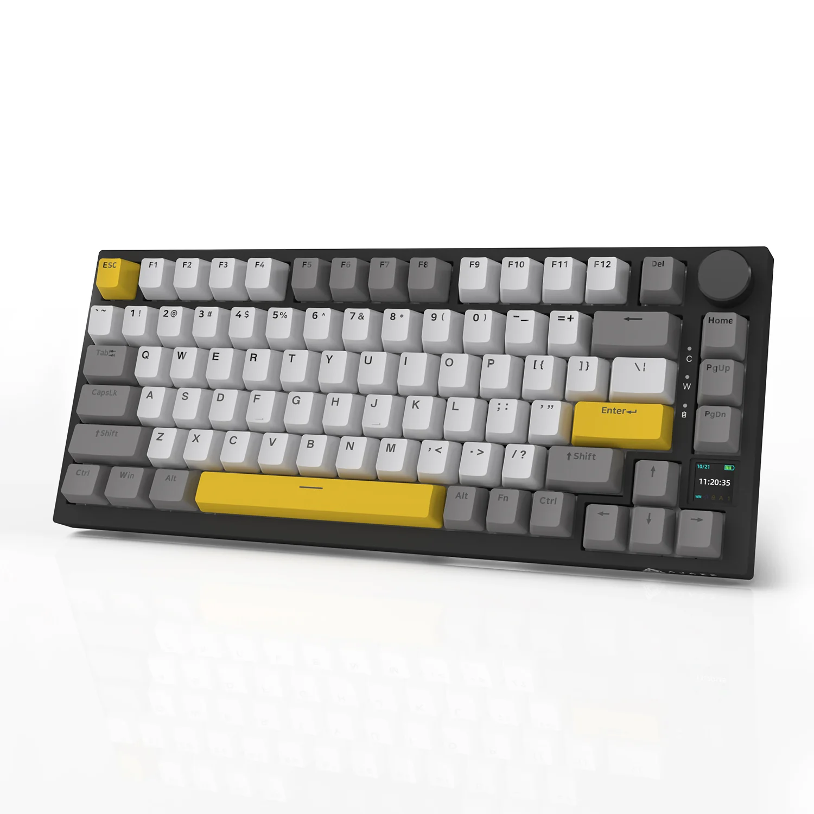

Маргарита
Ця піца є класичним італійським варіантом з тонким тістом, соусом із свіжих помідорів, моцарелою та базиліком. Її простота робить її надзвичайно смачною!
Це італійська класика, відома у всьому світі. Більш детально можна прочитати тут.